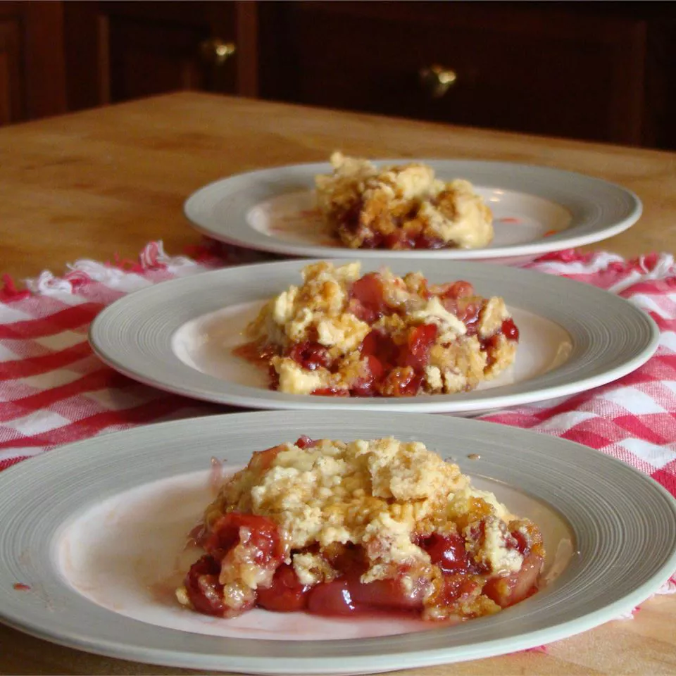

Dump Cake

Description
This dump cake recipe is as easy as dumping ingredients in a pan!
Ingredients
- 1 (21 ounce) can cherry pie filling
- 1 (15 ounce) can crushed pineapple
- 1 (15.25 ounce) package yellow cake mix
- 8 ounces chopped walnuts
- ½ cup butter, melted
Steps
- Preheat the oven to 350 degrees F (175 degrees C).
- Mix cherries and pineapple in a 9x13-inch pan. Sprinkle dry cake mix over pineapple and cherry mixture; stir
until just combined. Sprinkle walnuts over the top and drizzle with melted butter.
- Bake in the preheated oven until golden brown on top, about 35 to 40 minutes.